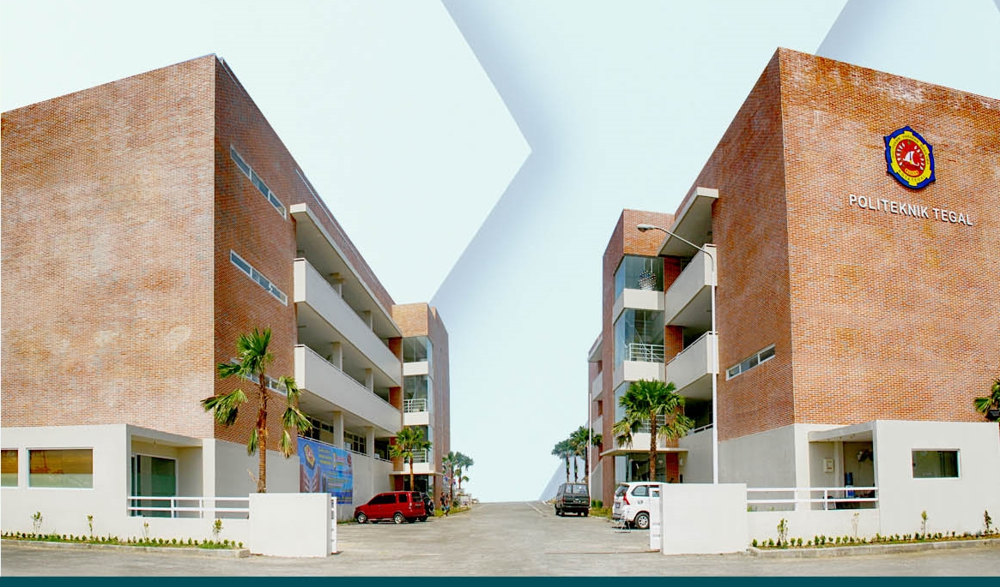

Sejarah
Kota Tegal terkenal dengan Jepangnya Indonesia, kota yang dinamis dan metropolis membuat masyarakat luas kagum dengan hasil karya produksi home industri yang banyak diciptakan oleh anak negeri ini, dengan ingin meningkatkan kwalitas dan hasil mutu produksi maka lahirlah pelopor pendidikan swasta yaitu pada tanggal 22 september Yayasan Pendidikan "HARAPAN BERSAMA" dengan akte Notaris No. 26-05/BH/yy/2002/ PBH PN. Kemudian dalam rangka mewujudkan visi dan misinya pada tanggal 12 Desember 2001 timbul gagasan untuk merintis pendirian POLITEKNIK di Kota Tegal dengan dikeluarkan Rekomendasi Walikota Tegal No. 421.4/00024. Selanjutnya dengan surat Rekomendasi tersebut dijadikan dasar motivasi untuk membangun Perguruan Tinggi yang diberi nama dengan POLITEKNIK “HARAPAN BERSAMA” Kota Tegal.
Politeknik Harapan Bersama Tegal didirikan tahun 2002 berdasarkan SK. Mendiknas RI Nomor : 128/D/O/2002 yang berkedudukan di kota Tegal. Pada awal berdirinya Politeknik memiliki empat Program Studi yaitu Teknik Mesin, Teknik Elektro, Teknik Komputer & Akuntansi. Sejalan dengan pesatnya pembangunan nasional dan perkembangan industri dan kesehatan maka ditahun 2004 Politeknik membuka Program Studi Kebidanan dan Farmasi. Dengan dibukanya Prgram Studi Kebidanan diharapkan Politeknik menjadi lebih maju dan lebih dikenal oleh masyarakat.